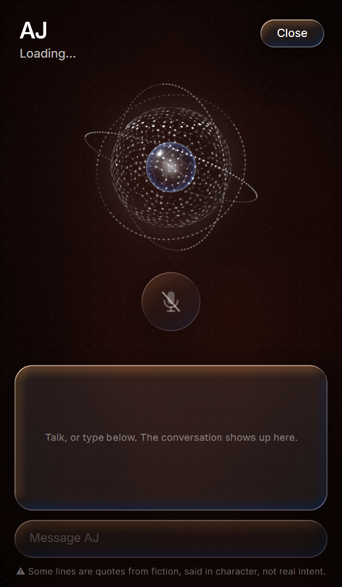
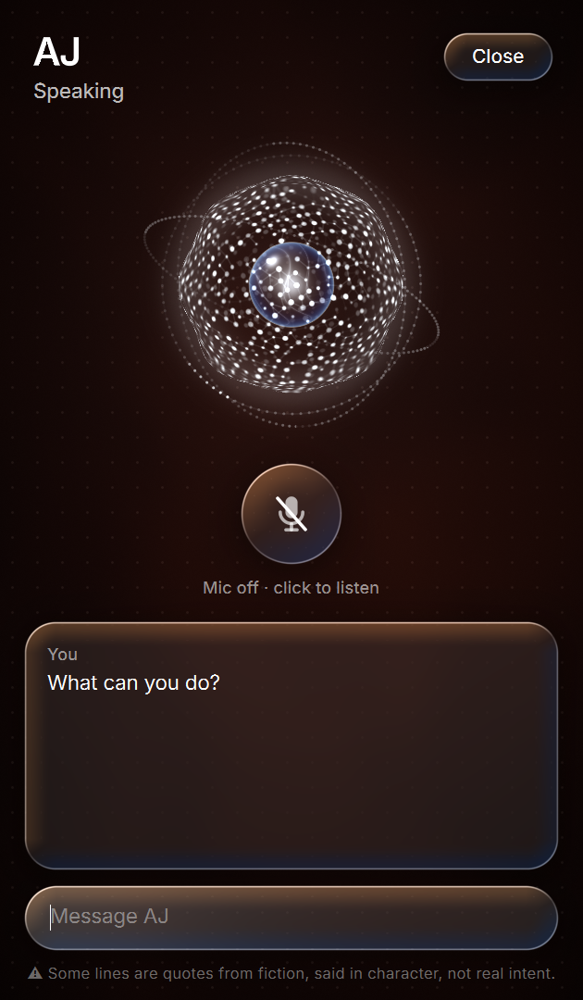
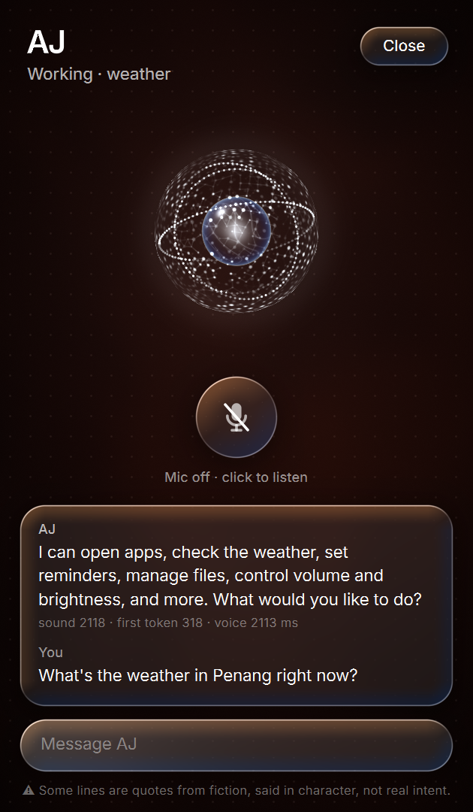
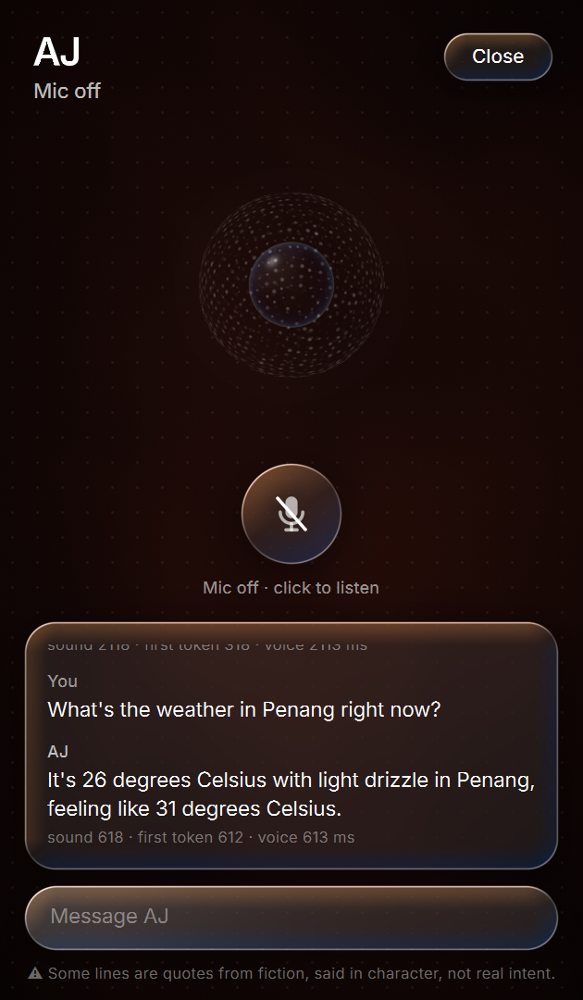
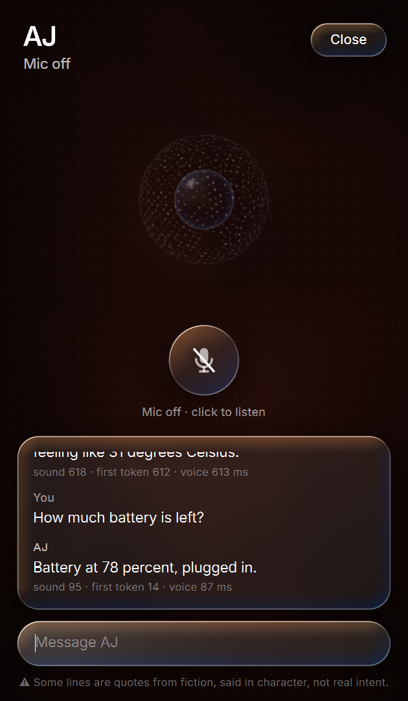
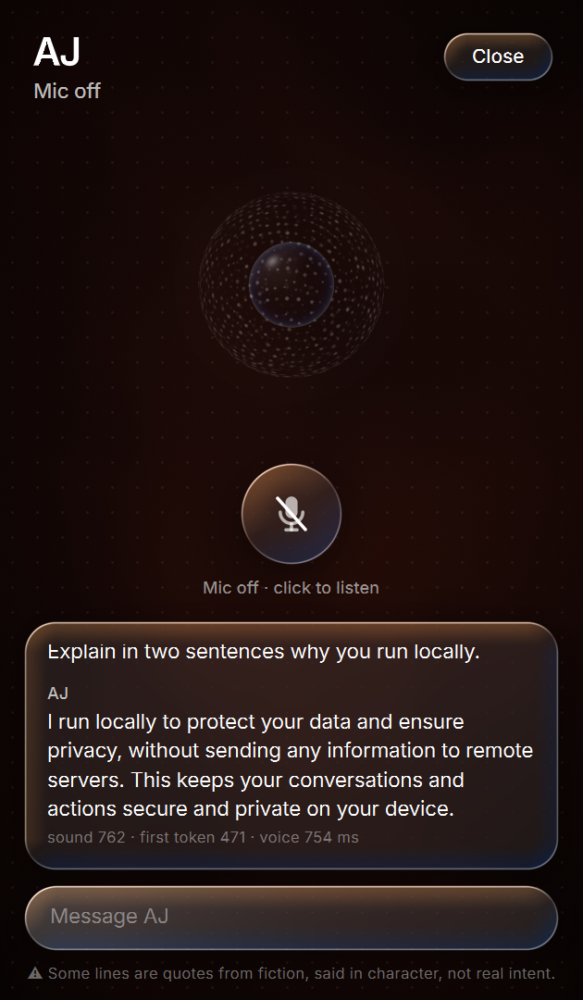

Personal project · 2026 · In progress
AJ, my personal AI assistant
AJ is a voice assistant that runs on my own Windows laptop. I talk and it answers out loud. It is local first: the main loop of hearing, thinking and speaking runs on the laptop itself, on a 6 GB GPU.
The app
These are captures of the real window, taken while it was running on my laptop. I typed the questions for these shots; the small line under each reply is the app's own latency readout for that turn.






What I did
- Designed a local streaming voice pipeline (voice activity detection, speech-to-text, a quantised Qwen3-4B on llama.cpp, text-to-speech) where every stage overlaps the next, so it fits a 6 GB laptop GPU and starts speaking before the model has finished writing.
- Chose the models from measurements: 5 local LLM setups benchmarked on first-sentence latency, tool-call accuracy and memory-extraction recall, then a blind A/B listening test to settle the pick.
- Designed its memory after I saw SivaSafe delete stored facts to stay under its memory limit: AJ keeps every fact in SQLite and gives each prompt only about 600 tokens of core facts plus up to 5 full-text matches.
- Designed the laptop-control layer as 47 permission-gated tools (safe, confirm or blocked), with each call's arguments checked against a schema, run under a timeout and written to an audit log.
- Cut the LLM server's RAM from 2.8 GB to 0.75 GB through llama.cpp settings, and GPU stalls from about 300 ms to 30 ms with one-token wake-up requests sent while I am still talking.
How it was built: with AI-assisted development. I designed the system, chose the models from benchmark data and blind listening tests, and directed and tested every change. An AI coding assistant wrote much of the code under my direction.
Benchmarks
Measured on an RTX 4050 Laptop GPU (6 GB), a Ryzen 7 7840HS and 16 GB of RAM, under Windows 11. The highlighted row is the setup I chose. The language models are Q4_K_M quantised GGUF files served by llama.cpp, and the chosen setup takes about 3.1 GB of graphics memory. The benchmark scripts are in the repo.
| Qwen3-4B (GPU), chosen | |
|---|---|
| Hermes-3 3B (GPU) | |
| Gemma 4 E4B (GPU) | |
| Qwen3-1.7B (CPU) | |
| Qwen3-4B (CPU) |
Solid bar: median. Outline: 95th percentile. Shorter is better.
| Qwen3-4B (GPU), chosen | |
|---|---|
| Gemma 4 E4B (GPU) | |
| Qwen3-4B (CPU) | |
| Qwen3-1.7B (CPU) | |
| Hermes-3 3B (GPU) |
20 scripted laptop commands, 3 seeded runs each. Longer is better. Three setups tied here, so latency, recall and the listening test decided it. With 60 runs, 91.7% carries a margin of about 7 points either way (roughly 82% to 96%).
| Qwen3-4B (GPU), chosen | |
|---|---|
| Hermes-3 3B (GPU) | |
| Qwen3-4B (CPU) | |
| Qwen3-1.7B (CPU) | |
| Gemma 4 E4B (GPU) |
Share of facts in a conversation that the model pulled out correctly. Longer is better.
| MiniCPM5-2B, thinking mode | |
|---|---|
| Qwen3-4B |
Why AJ hands hard questions to a second, on-demand reasoning model.